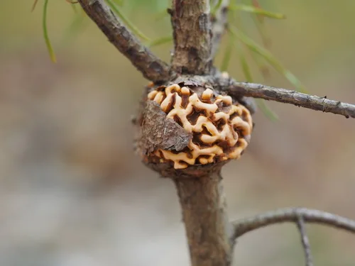

松枝上长出球形木质瘿瘤
松枝上的木球在春季产孢时更醒目。发生在小侧枝还是中央主梢，将影响受害范围。

检查植株
确认瘿瘤与松枝组织连成一体。瘿锈病可形成近球形的膨大，并连续多年留在枝条上。查看瘿瘤外侧枝段有无弯折、枯梢；补拍健康松针和球果，松树种类有助于缩小诊断范围。
区分相似表现
春雨后留意老瘿表面是否出现橙色孢子堆。正常松果有清晰鳞片，通过一个连接点附着在枝上。
现场处理
若仅有小侧枝受害，可在春季散孢前剪除带瘿枝。主干长瘿则需结合位置与树势单独评估。
后续复查
记录松树种类，跨季拍摄同一瘿瘤。多种瘿锈外观相似，定种有时还需其他寄主证据。
值得单独记录的细节
拍寄主照片时保留数束完整松针，记录每个叶鞘伸出多少枚针叶。只拍散落的松针会丢失这条辨识松种的线索。
确认球状膨大包住的是哪一段枝
沿着枝的主轴观察圆瘿，看看枝条是否从肿块两端连续伸出。再量出圆瘿到主干分叉的大致距离。靠近枝端的瘿和紧贴主干的瘿，即使大小相似，修剪后能保留的枝量也不同。切勿把主干上的瘿当作表面附着物削掉，以免给树干造成更大伤口。